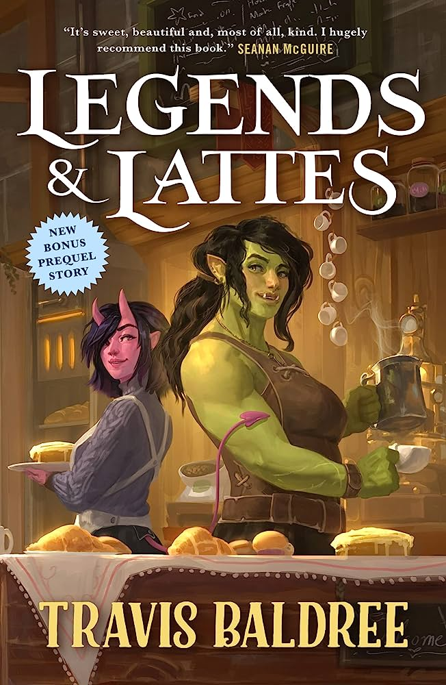
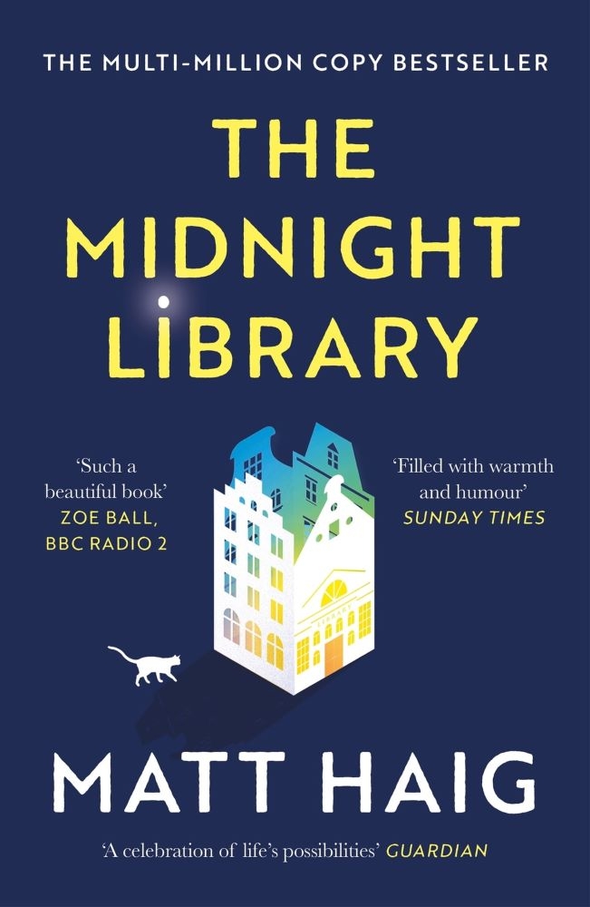
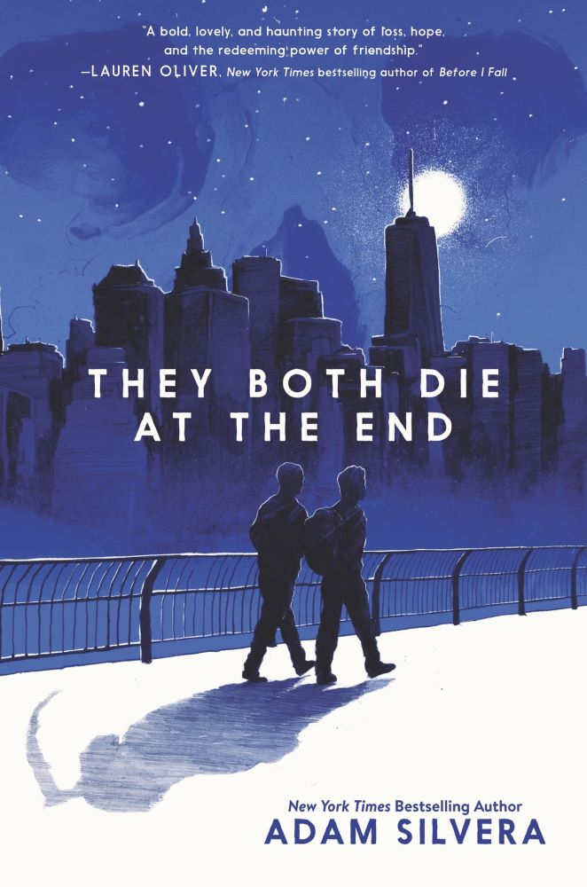

Gerelateerde producten

Legends & Lattes
Orc Viv is helemaal klaar met een leven vol vechten en bloedvergieten. Ze hangt haar trouwe zwaard aan de wilgen...

The Midnight Library
Nora Seed heeft veel spijt van allerlei dingen in haar leven en besluit niet meer te willen leven...

They Both Die at the End
Op 5 september, net na middennacht, belt DeathCast Mateo Torrez en Rufus Emeterio om ze slecht nieuws te geven...